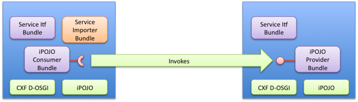
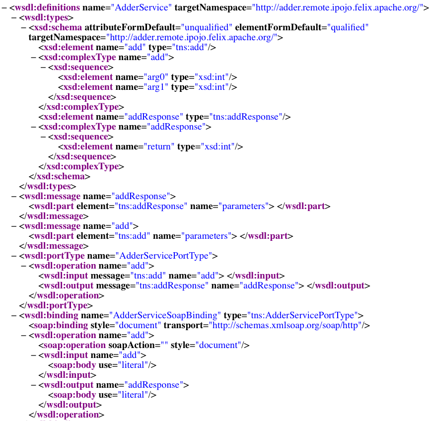

Using Distributed Services with iPOJO
Distributed Service defines how to deal with remote services in OSGi. This page describes the CXF Distributed OSGi with iPOJO demo.This demo uses iPOJO to create a remote OSGi service from an iPOJO component. The consumer side also uses iPOJO to create a component that consumes the remote OSGi service. By using iPOJO, you don't need to write code to interact with the OSGi Service Registry at all. That's all handled through injection, which hugely simplifies the code. Moreover thanks to iPOJO's advanced features such as property propagation, the service is exported without any impact on its implementation.
In this demo, you will show how to use iPOJO:
- to expose a service
- to propagate properties to make the service remotely accessible
- to use a "remote" service
This demo can be used with any DOSGi distribution, in this document the single-bundle distribution (1.1) is used with iPOJO 1.6.0 and Felix (2.0.5)
Demo design
This demo is quite similar to the DS demo of DOSGi demo in structure. It consists of 5 bundles:
- An interface bundle defining the Adder Service interface.
- This bundle is deployed on both sides.
- An Adder Service implementation bundle. (The service will be exported)
- An Adder Service importer bundle containing the remote-service file explaining to DOSGi how to import and from where to import the Adder service.
- An Adder Service consumer bundle.

The service implementation and consumer bundle are built using iPOJO. The Adder Service interface is as follows:
public interface AdderService { int add(int a,int b); }
Sources
The sources and a pre-configured version of Felix are available in the dosgi-tutorial archive. Once downloaded unzip the archive. To compile, run from the root : mvn clean install. To run the application. go to the felix directory containing a pre-configured Felix.
The Adder Service Implementation
The service implementation is a simplistic implementation of the Adder service, which is instantiated as an iPOJO component. This implementation uses annotations to define its component type. The @provides annotation just says that it provides a service. Moreover, the propagation=true attribute enables property propagation.
In the metadata.xml file, an instance of the component type is declared. Note that this instance declaration defines three properties used by DOSGi to exports the service. These properties instruct Distributed OSGi into making the service available on http://localhost:9090/adder. Those properties are not declared in the component type itself. Indeed, the component type enables property propagation; so all defined properties will be published on exported services. This propagation also works with the configuration admin. This feature is pretty nice, as it does not impact the component implementation and its description.
<instance component="org.apache.felix.ipojo.remote.adder.impl.AdderServiceImpl"> <property name="osgi.remote.interfaces"value="*"/> <property name="osgi.remote.configuration.type"value="pojo"/> <property name="osgi.remote.configuration.pojo.address"value="http://localhost:9090/adder"/> </instance>
So let's install the server side in Felix. Launch Felix from the felix directory with:
java -jar bin/felix.jar server
Once the shell prompt appears, execute the following command in the shell:
start file:../AdderServiceInterface/target/AdderServiceInterface-0.0.1-SNAPSHOT.jar start file:../AdderServiceProvider/target/AdderServiceProvider-0.0.1-SNAPSHOT.jar
At this point, the service should be available remotely (wait until the console stops printing stuff), you can check this by obtaining the WSDL: http://localhost:9090/adder?wsdl

The Adder Service Consumer
The service consumer is also created using iPOJO. Thanks to DOSGi, iPOJO can inject the service as any regular OSGi service. So, the code is pretty simple:
@Component public class AdderConsumer { @Requires private AdderService adder; public AdderConsumer() { System.out.println("Using adder service: 1 + 1 = "+ adder.add(1, 1)); } }
This implementation use iPOJO field injection to receive the AdderService. Then, it uses it as a regular field. This bundle also contains a [metadata.xml|http://svn.apache.org/repos/asf/felix/sandbox/clement/ipojo-tutorials/dosgi/AdderServiceConsumer/src/main/resources/metadata.xml] file declaring an instance of this type without any special configuration:
<instance component="org.apache.felix.ipojo.remote.consumer.AdderConsumer"/>
However, now we have to tell to DOSGi to import our Adder service. To achieve that, we create a very simple bundle that just contains the remote-services.xml file. This file is analyzed by CXF in order to import the service.
<service-descriptions xmlns="http://www.osgi.org/xmlns/sd/v1.0.0"> <service-description> <provide interface="org.apache.cxf.dosgi.samples.ds.AdderService"/> <property name="osgi.remote.interfaces">*</property> <property name="osgi.remote.configuration.type">pojo</property> <property name="osgi.remote.configuration.pojo.address">http://localhost:9090/adder</property> </service-description> </service-descriptions>
Now, let's start another instance of Felix:
java -jar bin/felix.jar client
Then, execute the following command in the shell:
start file:../AdderServiceInterface/target/AdderServiceInterface-0.0.1-SNAPSHOT.jar start file:../AdderServiceConsumer/target/AdderServiceConsumer-0.0.1-SNAPSHOT.jar start file:../AdderServiceImporter/target/AdderServiceImporter-0.0.1-SNAPSHOT.jar ... log messages may appear, after a little while the following message appears: Using adder service: 1 + 1 = 2
The remote adder service has now been invoked. You will see the following line on the server side window:
Adder service invoked: 1 + 1 = 2
That's it !
Conclusion
This tutorial has illustrated how to easily create remote services and consume them with iPOJO. Subscribe to the Felix users mailing list by sending a message to users-subscribe@felix.apache.org; after subscribing, email questions or feedback to users@felix.apache.org.